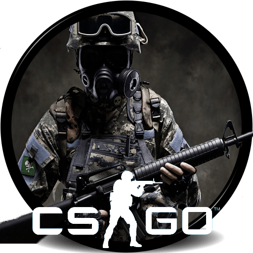

|
 |
O MIBR VENCEU O CHAOS EM PRIMEIRO LUGAR NO GRUPO FLASHPOINT B; FASE 1 CONCLUÍDA
O MIBR garantiu o primeiro lugar no Grupo B no ponto 1 do Flash depois de derrotar o Caos na final do grupo quando a primeira fase do torneio estiver concluída.
Com a vitória por vingança contra o Caos , que desta vez teve que jogar com Logan "Voltage" Long, em vez de Owen "smooya" Butterfield , com sede em vistos , o time brasileiro completou um retorno bem-sucedido de sua derrota para a equipe de Joshua "aço" da Nissan . na rodada de abertura da fase de grupos.
Eles o fizeram após a mudança do torneio para um cenário on-line, depois de uma corrida dominante na parte inferior do grupo, apelidada de Snakes & Ratters, e derrotar todos os outros times; Inveja ,Gen.G e Caos.
A vitória mais recente mostra o MIBR progredir significativamente na jornada para os playoffs, ao conquistar o número máximo de pontos em oferta ao superar o grupo (75), completando a primeira fase do Flashpoint 1.
Na revanche contra o Chaos , o MIBR parecia mais do que confortável em sua própria escolha, Overpass, onde um ótimo começo no ataque liderado por Fernando "fer" Alvarenga e Gabriel "FalleN" Toledo lhes permitiu acumular um confortável 10-5. O tumulto continuou depois de mudar de lado, com os brasileiros caminhando para o ponto do mapa e fechando o mapa de abertura 16-7.